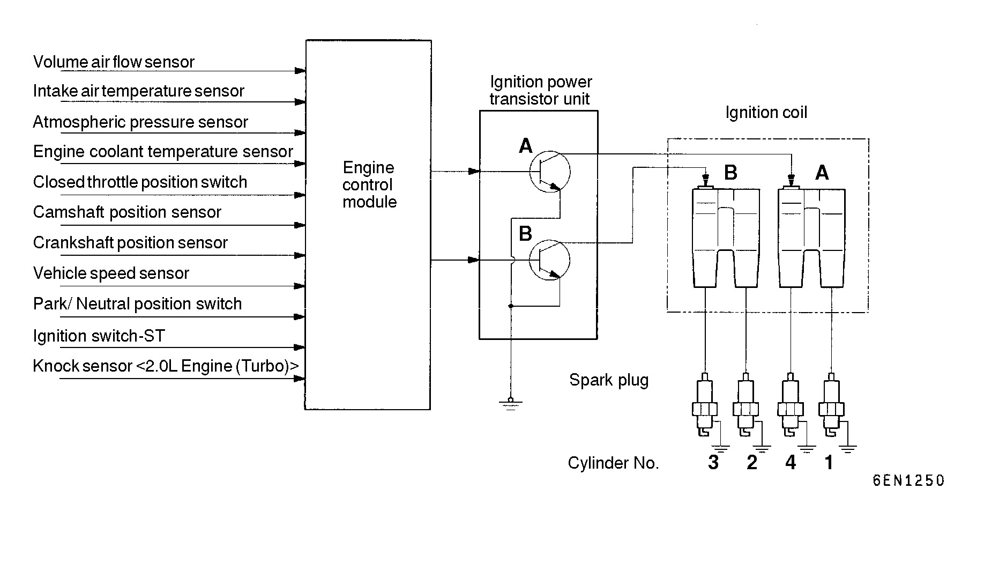

![[Previous]](https://mitsubishitechinfo.com/data/F24S/BUTTONS/fprevg.png)
![[Next]](https://mitsubishitechinfo.com/data/F24S/BUTTONS/fnextg.png)
IGNITION SYSTEM
<2.0L ENGINE (TURBO) AND 2.4L ENGINE>
GENERAL INFORMATION
This system is provided with two ignition coils (A and B) and two ignition power transistors (A and B) for the No. 1 and No. 4 cylinders, and No. 2 and No. 3 cylinders respectively.
Interruption of the primary current flowing in the primary side of ignition coil A generates a high voltage in the secondary side of ignition coil A.
The high voltage thus generated is applied to the spark plugs of No. 1 and No. 4 cylinders to generate sparks. At the time that the sparks are generated at both spark plugs, if one cylinder is at the compression stroke, the other cylinder is at the exhaust stroke, so that ignition of the compressed air/fuel mixture occurs only for the cylinder which is at the compression stroke.
In the same way, when the primary current flowing in ignition coil B is interrupted, the high voltage thus generated is applied to the spark plugs of No. 2 and No. 3 cylinders.
The engine control module controls the two ignition power transistors (A and B) to turn them alternately ON and OFF. This causes the primary currents in the ignition coils (A and B) to be alternately interrupted and allowed to flow to fire the cylinders in the order 1-3-4-2.
The engine control module determines which ignition coil should be controlled by means of the signals from the camshaft position sensor which is incorporated in the camshaft and from the crankshaft position sensor which is incorporated in the crankshaft. It also detects the crankshaft position in order to provide ignition at the most appropriate timing in response to the engine operation conditions.
When the engine is cold or operated at high altitudes, the ignition timing is slightly advanced to provide optimum performance.
Furthermore, if knocking occurs, the ignition timing is gradually retarded until knocking ceases.

IGNITION COIL SPECIFICATION
|
Items |
Specifications |
| Type |
Molded 2 coil |
|
SPARK PLUG SPECIFICATION
| Items |
2.0L Engine (Turbo) |
2.4L Engine |
| Type |
NGK |
BPR6EKN, BPR6ES |
BKR5E-11 |
| NIPPON DENSO |
W20ETR-L8, W20EPR |
K16PR-U11 |
| CHAMPION |
RN9YC |
RC9YC4 |
|
OPERATION
•Turn ignition switch to "ON" position, and battery positive voltage will be applied to primary winding of ignition coil.
•When crankshaft position sensor signal is input to engine control module, engine control module makes ON-OFF control of ignition power transistor one by one.
•When ignition power transistor is turned on, current flows from ignition coil (primary winding) to ground through ignition power transistor.
•When ignition power transistor A is turned from ON to OFF, the spark plugs of No. 1 and No. 4 cylinders spark. Turning of ignition power transistor B from ON to OFF will produce sparking in spark plugs of No. 2 and No. 3 cylinders.